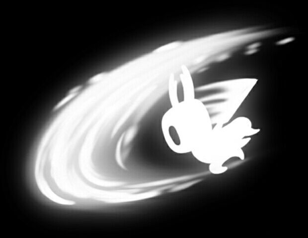

伤害：5
获取方式：开局自带的武器
锁骨钉会降低骨钉的伤害，旧骨钉的伤害会被降低为4
伤害：9
获取方式：在钉子匠处花250G升级
锁骨钉会降低骨钉的伤害，锋利的骨钉的伤害会被降低为7
伤害：13
获取方式：在钉子匠处花800G和一颗苍白矿石升级
锁骨钉会降低骨钉的伤害，开槽的骨钉的伤害会被降低为10
伤害：17
获取方式：在钉子匠处花2000G和两颗苍白矿石升级
锁骨钉会降低骨钉的伤害，带螺纹的的骨钉的伤害会被降低为13
伤害：21
获取方式：在钉子匠处花4000G和三颗苍白矿石升级
锁骨钉会降低骨钉的伤害，纯粹骨钉的伤害会被降低为13
介绍：骨钉大师席奥的标志性技能，按住攻击键蓄力，蓄力完成后角色会发白光，然后松开攻击键释放
在地面、空中、爬墙状态都可以使用，造成2.5倍当前骨钉伤害，范围很大。背后也能打到部分。
获得方式：苍绿之径与席奥对话习得
介绍：骨钉大师奥罗的标志性技能，按住攻击键蓄力，蓄力完成后角色会发白光，然后按下冲刺键松开攻击键释放
造成2.5倍当前骨钉伤害，范围很远。能在格林放完弹幕后贪一刀
获得方式：国王边缘与奥罗对话，花费800G习得
介绍：骨钉大师马托的标志性技能，按住攻击键蓄力，蓄力完成后角色会发白光，然后按住上键或者下键松开攻击键释放
旋转的过程中可以快速按攻击键以增加攻击次数，可攻击3~7次，每次攻击造成1.25倍当前骨钉伤害。在空中连续释放可以减缓下落速度。
获得方式：呼啸山崖与马托对话习得